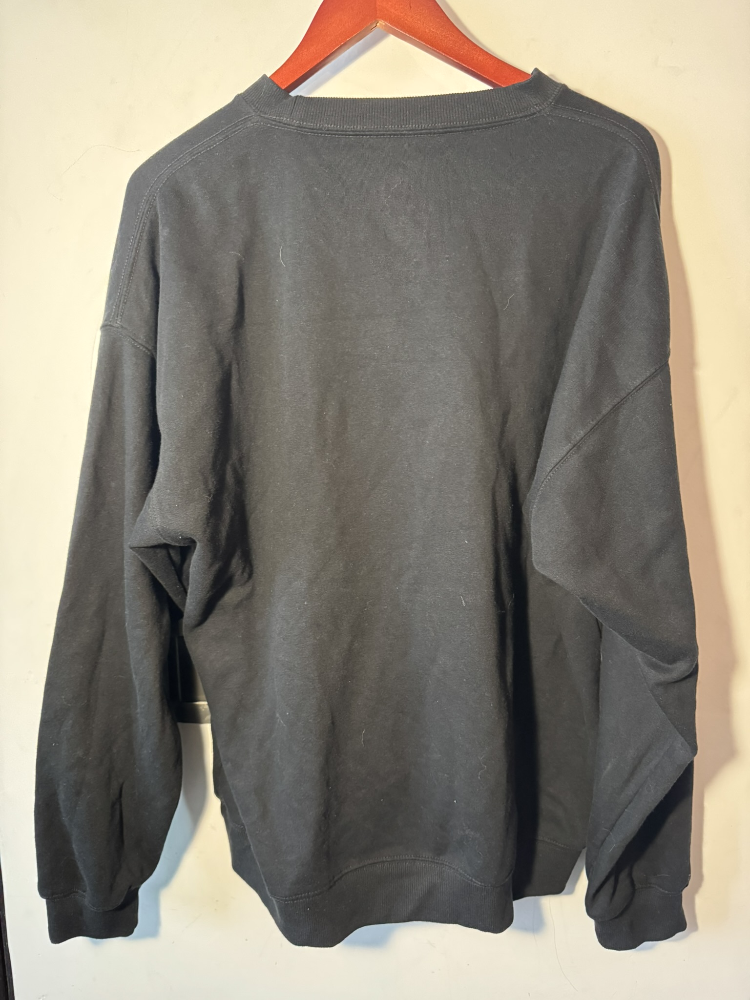
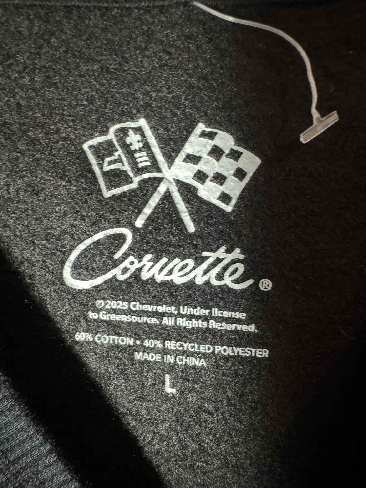
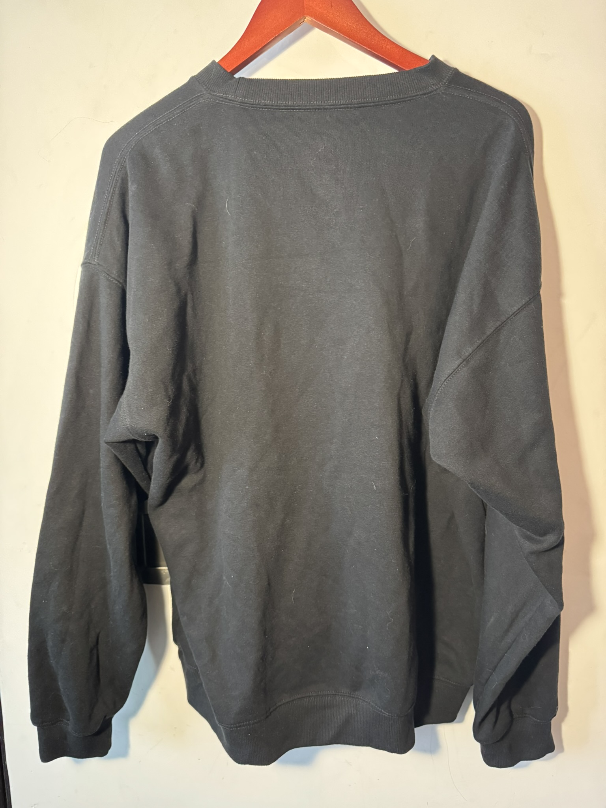
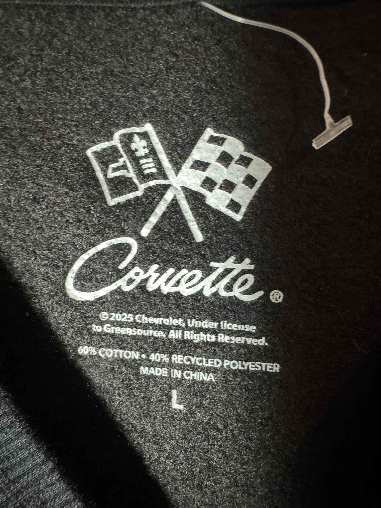

$500.00 MXN
Descripción
Sudadera cuello redondo (crewneck) en color negro con gráfico retro "Chevy Corvette Sting Ray", confección suave de algodón y poliéster para los amantes del estilo motor.
Marca
Corvette
Tallas Disponibles
L
Comprar por WhatsApp 💬